CasesMarcas que saíram
Marcas que saíram
do genérico.
Cada marca com estratégia e estética próprias, nascidas do diagnóstico e não de um molde.
Cada marca com estratégia e estética próprias, nascidas do diagnóstico e não de um molde.
Clique numa marca para ver a apresentação completa.
Cada marca sai com o perfil organizado e conteúdos prontos para publicar.
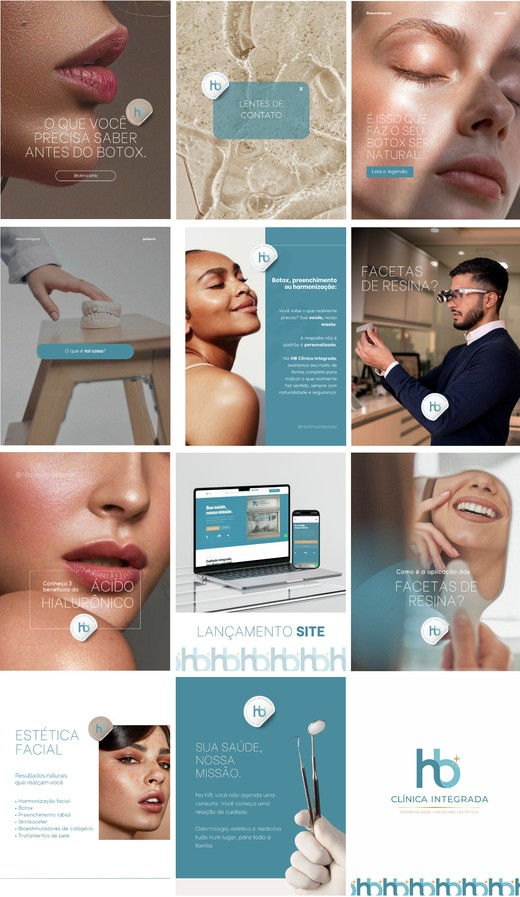
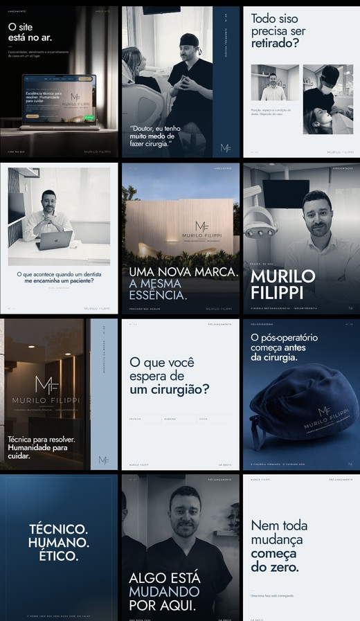
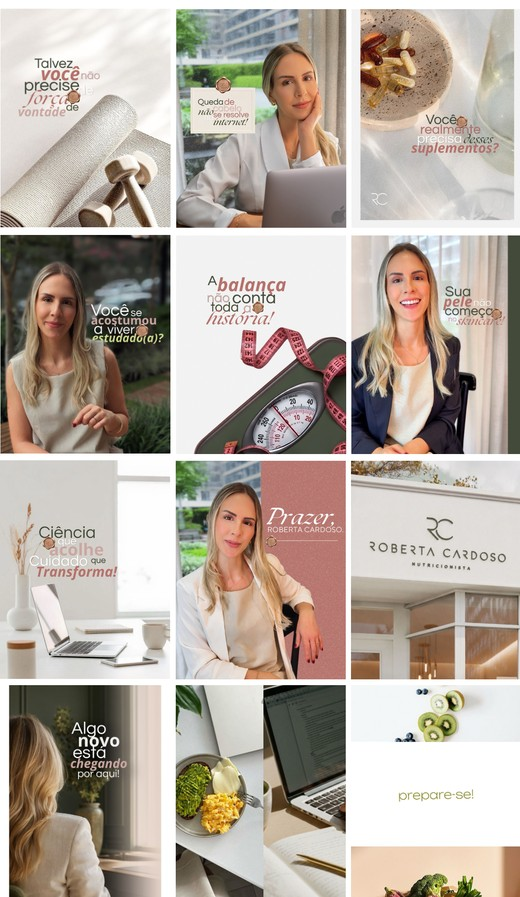
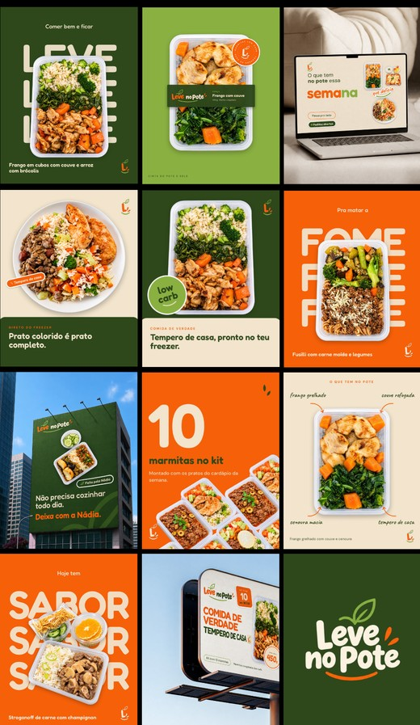
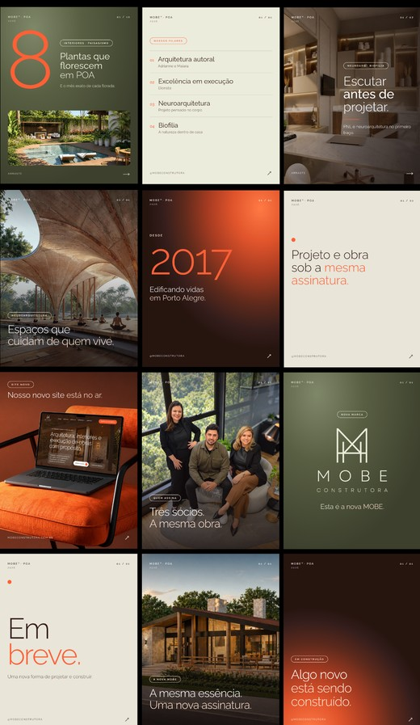
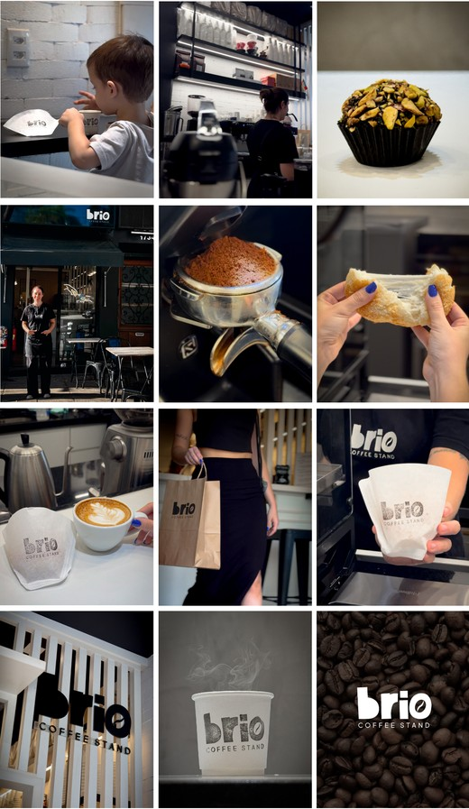
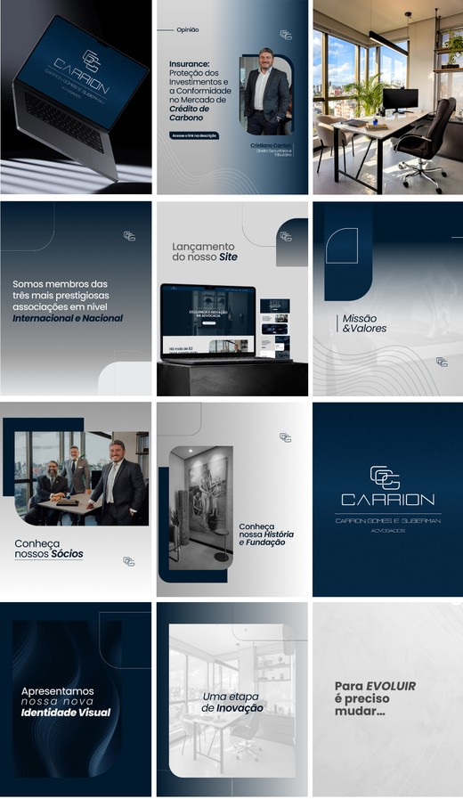
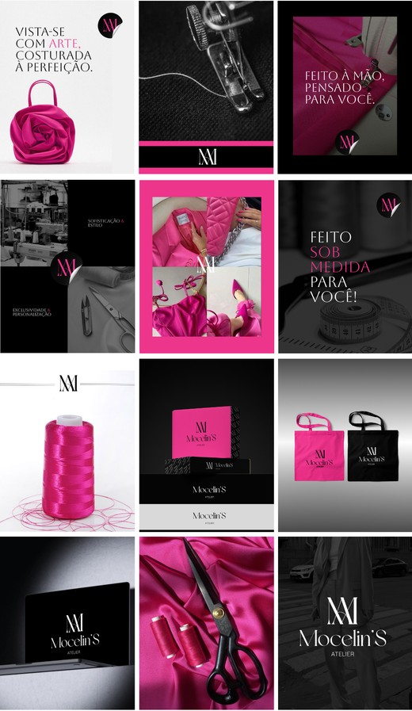
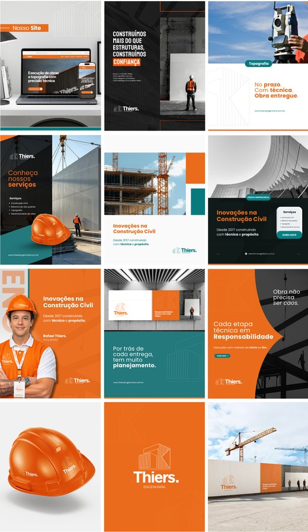
Sites sob medida, publicados dentro do projeto e pensados para levar a pessoa até o contato.
Retratos, equipe, ambiente e produto, prontos para site, Instagram e campanhas.
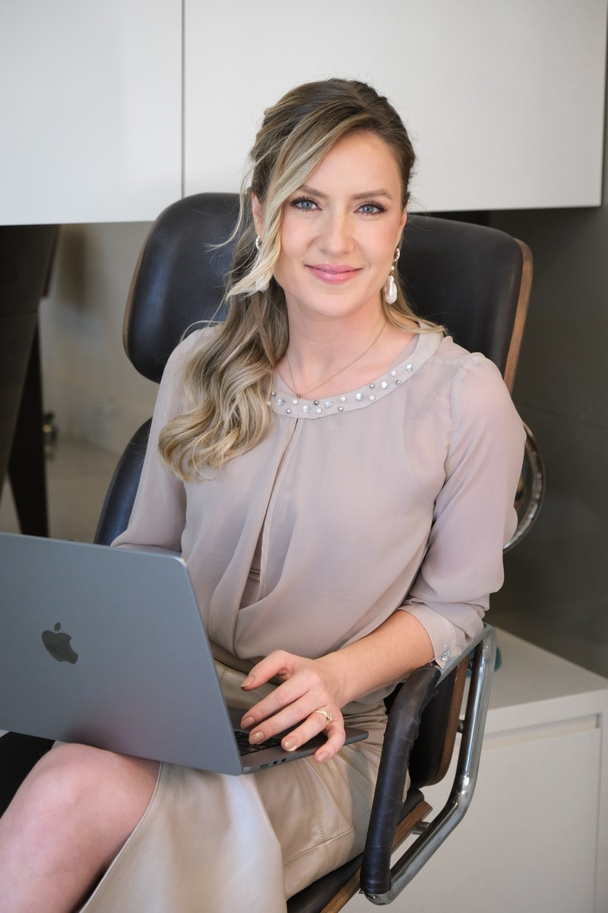
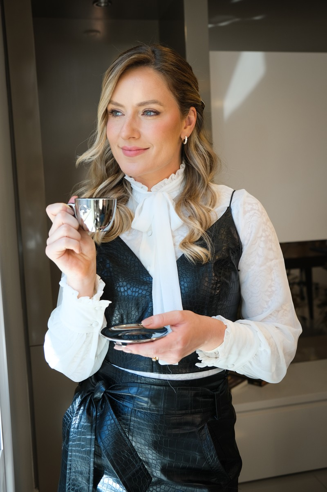
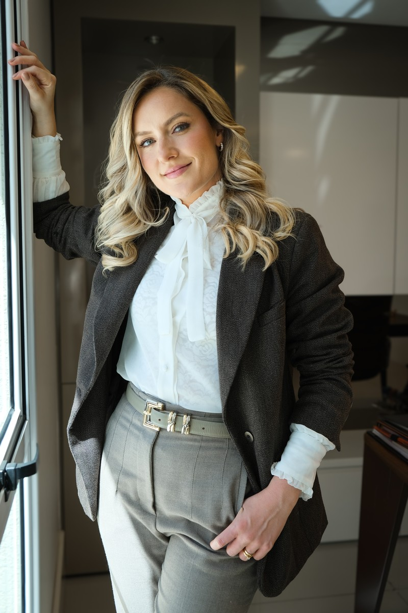
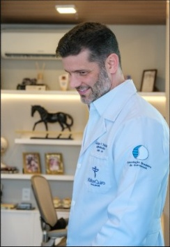
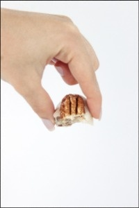
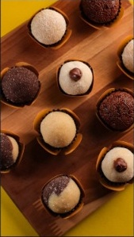
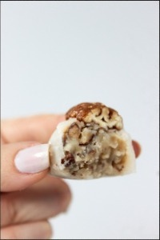
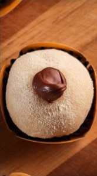